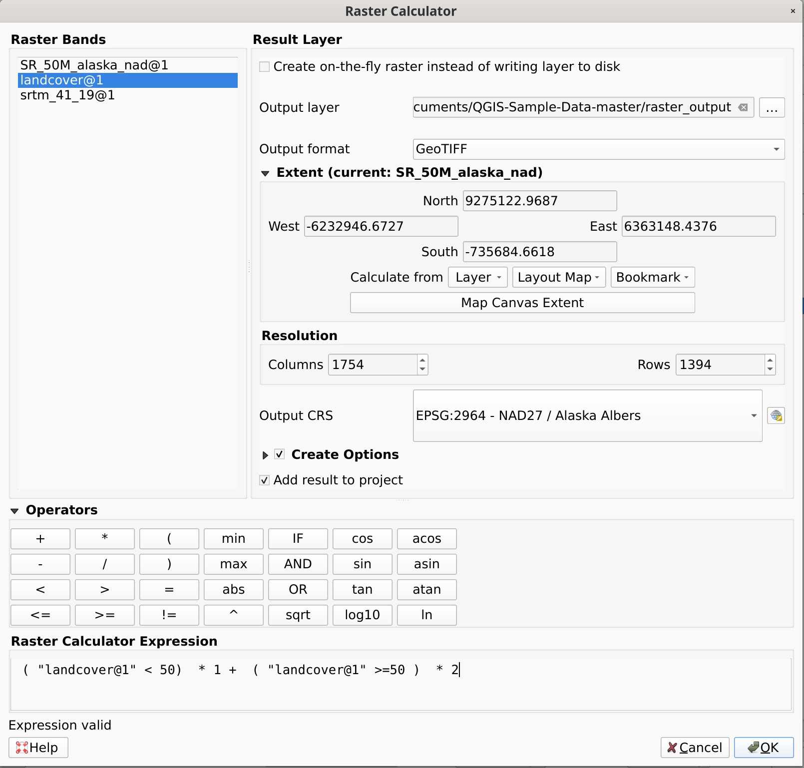
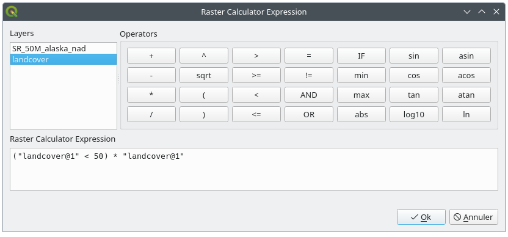

重要
翻訳は あなたが参加できる コミュニティの取り組みです。このページは現在 95.00% 翻訳されています。
13.2. ラスタ解析
13.2.1. ラスタ計算機
メニューの は、既存のラスタのピクセル値に基づいた計算を実行します（ 図 13.33 参照）。結果はGDALがサポートする形式の新規ラスタレイヤとして書き出されます。

図 13.33 ラスタ計算機
バンド リストには、使用できる全ての読み込まれたラスタレイヤが含まれています。ラスタ計算機の式フィールドにラスタを追加するには、フィールドリスト内で名前をダブルクリックします。次に演算子を使って計算式を作成するか、ボックスに入力するだけにします。
ラスタレイヤ セクションでは、出力レイヤを定義する必要があります。以下の設定が可能です：
 ディスクに書き込まないオンザフライ・ラスタを作成
ディスクに書き込まないオンザフライ・ラスタを作成これにチェックを入れない場合、出力結果は通常の新しいファイルとしてディスク上に保存されます。 出力レイヤ のパスと、 出力形式 を指定する必要があります。
チェックを入れた場合、仮想のラスタレイヤ、つまりURIによって定義され、そのピクセルがオンザフライで計算されるラスタレイヤが作成されます。これはディスク上の新しいファイルではありません。仮想レイヤは計算に使用したラスタに関連付いているため、計算に使用したラスタを削除したり移動したりすると、仮想レイヤが壊れてしまいます。 レイヤ名 は指定することができますが、指定しない場合は計算式がレイヤ名として使用されます。仮想レイヤをプロジェクトから取り除くと削除されてしまいますが、レイヤの コンテキストメニューを使用して、ファイルの形式でこのレイヤを永続化させることができます。
Define the Spatial extent of the calculation using the extent selector widget.
レイヤの 解像度 は、カラム数と行数で設定します。入力レイヤの解像度と異なる場合には、最近傍アルゴリズムを使用して値がリサンプリングされます。
Enable the
Create Options to define additional raster creation options.
These options let you control how the output file is structured and compressed,
including format, compression method, and other driver-specific settings.
See more at Raster driver options.- 結果をプロジェクトに追加する のチェックボックスにチェックを入れると、結果のレイヤを自動的に凡例に追加し、レイヤを表示できます。仮想ラスタの場合にはデフォルトでチェックが入ります。
演算子 セクションには利用可能なすべての演算子があります。演算子をラスタ計算機の式ボックスに追加するには、それに応じたボタンをクリックします。算術計算（ + 、 - 、 * など）や三角関数（ sin 、 cos 、 tan など）が利用できます。条件式（ = 、 != 、 < 、 >= など）は、偽の場合は 0 、真の場合は 1 を返すので、他の演算子や関数と共に使うことができます。
参考
ラスタ計算機 及び ラスタ計算機（仮想） アルゴリズム
13.2.1.1. ラスタ計算機の式
ダイアログ
ラスタ計算機式 ダイアログは、複数のラスタレイヤでピクセル計算を行う式を記述する手段を提供します。

図 13.34 ラスタ式計算機
レイヤ: 凡例に読み込まれているすべてのラスタレイヤのリストが表示されます。これを使って式ボックスに入力できます（ダブルクリックで追加）。ラスタレイヤは、
layer_name@band_numberのように、その名前とバンド番号で参照されます。例えば、DEMという名前のレイヤの最初のバンドは、DEM@1という名前で参照されます。演算子: はピクセル操作用の計算演算子をたくさん格納しています:
算術:
+,-,*,sqrt,abs,ln, ...三角関数:
sin,cos,tan, ...比較:
=,!=,<,>=, ...論理:
IF,AND,OR,(,)統計:
min,max
演算子をラスタ計算機式のボックスに追加するには、適当なボタンをクリックしてください。
ラスタ計算機式 は式を組み立てる場所です
例
標高値をメートルからフィートに変換する
メートル単位の標高ラスタからフィート単位のラスタを作成するには、メートルからフィートへの換算係数 3.28 を掛けます。式は次のとおりです：
"elevation@1" * 3.28
マスクを使用する
例えば、標高0メートル以上の部分だけに興味があるなど、ラスタの一部をマスクしたい場合には、マスクの作成とその結果のラスタへの適用が以下の式を使用して一度に行えます。
("elevation@1" >= 0) * "elevation@1"
これはつまり、標高値が0以上の各セルは条件式の評価が1になり、元の値に1を掛けるので値が維持されます。そうでない場合には条件式の評価が0になり、ラスタ値が0になります。これにより、標高値に応じたマスクが作成されます。
ラスタのクラス分類
ラスタを例えば2つの標高クラスに分類したい場合には、次の式を使用すると、1つのステップで2種類の値 1と2を持つラスタを作成することができます。
("elevation@1" < 50) * 1 + ("elevation@1" >= 50) * 2
これはつまり、標高値が50未満の各セルには値1が設定され、50以上の各セルには値2が設定されます。
IF 演算子を使用することもできます。
if ( elevation@1 < 50 , 1 , 2 )